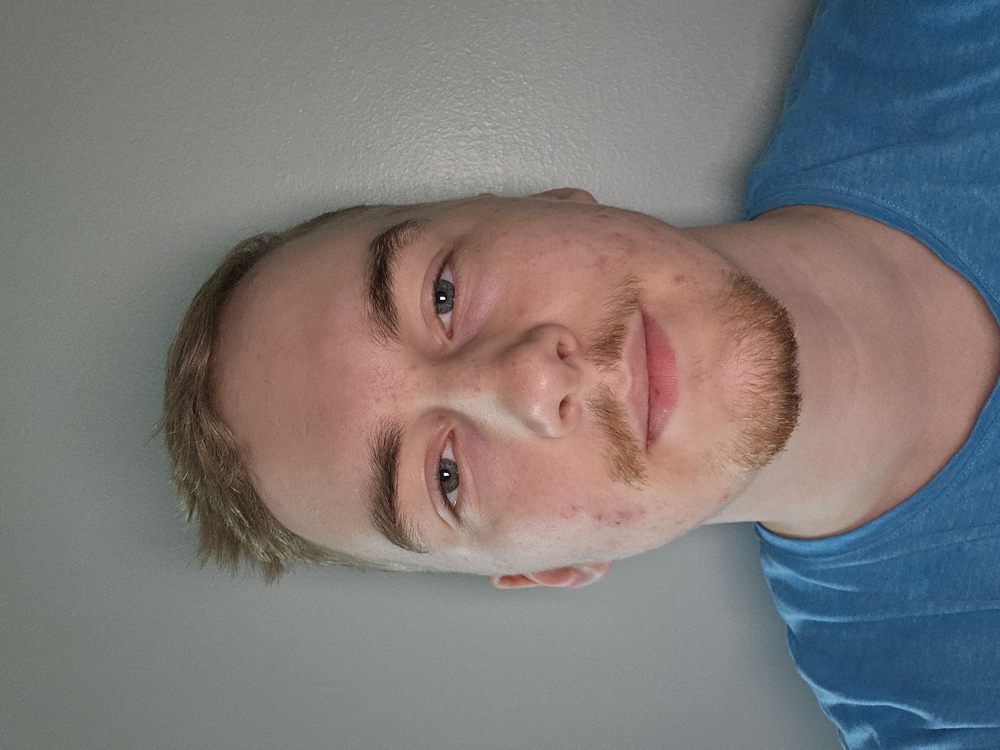

Kuka olen?
Opiskelen Jamkissa, Teknologiayksikössä, IT-instituutissa tieto- ja viestintätekniikan tutkinto-ohjelmassa. Alunperin olen kotoisin Toivakasta, mutta nykyään asun Jyväskylässä Vaajakoskella. Tavoitteenani on valmistua insinööriksi ja suuntautua ohjelmistokehitys puolelle. Olen myös erityisen kiinnostunut peliohjelmoinnin oppimisesta.